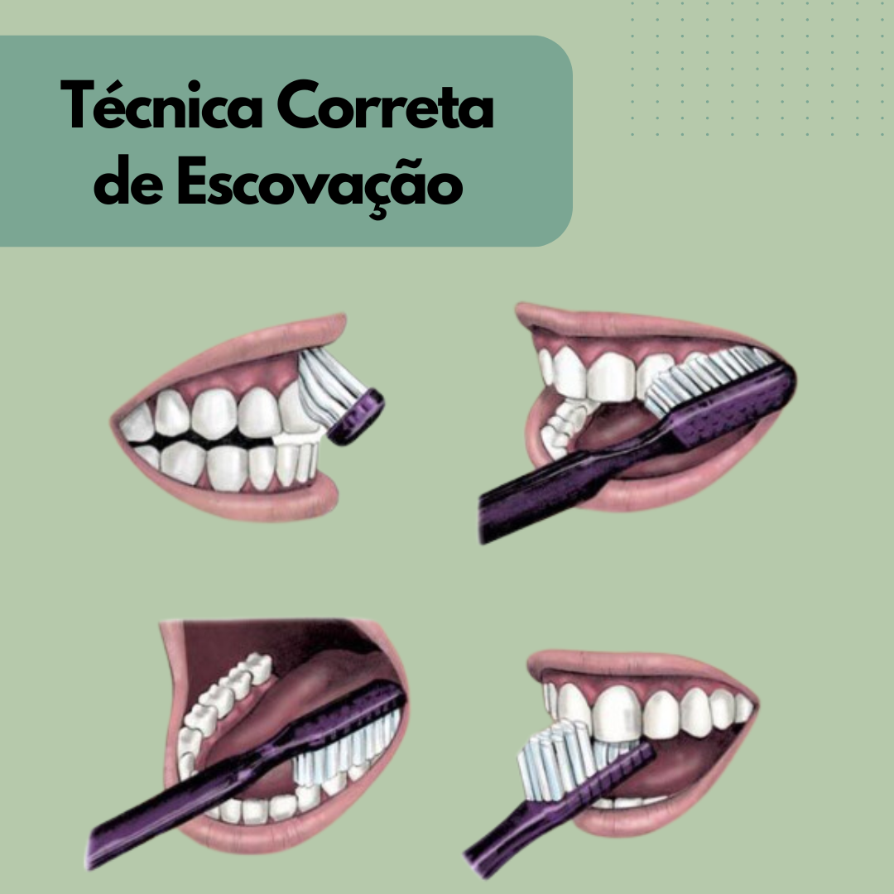
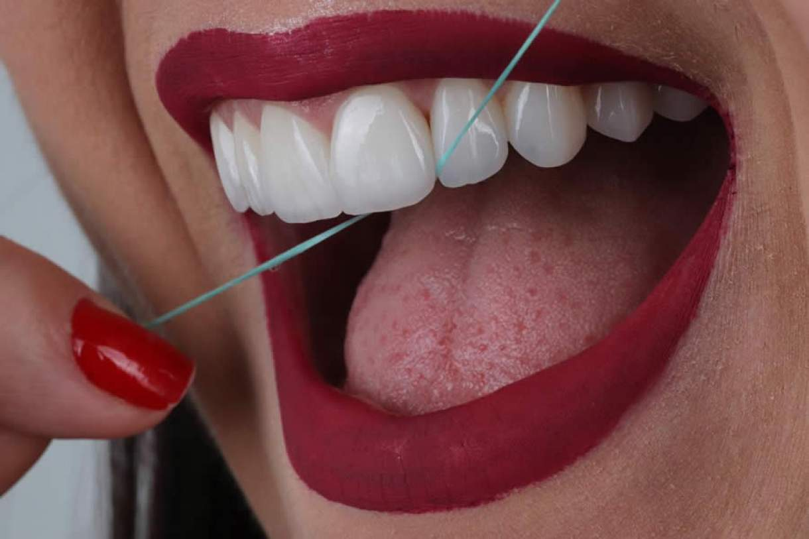

A higiene bucal diária é essencial para prevenir cáries, gengivite e o mau hálito. Escovar os dentes ao menos três vezes ao dia, usando creme dental com flúor, garante um sorriso saudável e dentes fortes por toda a vida.


O fio dental alcança as áreas onde a escova não consegue chegar, removendo a placa bacteriana e os resíduos de alimentos entre os dentes. Utilize-o diariamente antes da última escovação da noite.